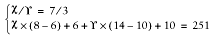

|  |
| |
Let's assume that you have two different sets of code that have little or nothing in common—different Perl modules, no code sharing. Typical numbers can be 4 MB of unshared[45] and 4 MB of shared memory for each code set, plus 3 MB of shared basic mod_perl stuff—which makes each process 17 MB in size when the two code sets are loaded. Let's also assume that we have 251 MB of RAM dedicated to the web server (Total_RAM):
[45]4 MB of unshared memory is a pretty typical size, especially when connecting to databases, as the database connections cannot be shared. Databases like Oracle can take even more RAM per connection on top of this.
Shared_RAM_per_Child : 11MB Max_Process_Size : 17MB Total_RAM : 251MB
According to the equation developed in Chapter 11:
We see that we can run 40 processes, using the given memory and the two code sets in the same server.
Now consider this practical decision. Since we have recognized that the code sets are very distinct in nature and there is no significant memory sharing in place, the wise thing to do is to split the two code sets between two mod_perl servers (a single mod_perl server actually is a set of the parent process and a number of the child processes). So instead of running everything on one server, now we move the second code set onto another mod_perl server. At this point we are talking about a single machine.
Let's look at the figures again. After the split we will have 20 11-MB processes (4 MB unshared + 7 MB shared) running on one server and another 20 such processes running on the other server.
How much memory do we need now? From the above equation we derive:
Using our numbers, this works out to a total of 174 MB of memory required:
But hey, we have 251 MB of memory! That leaves us with 77 MB of free memory. If we recalculate MaxClients, we will see that we can run almost 60 more servers:
So we can run about 19 more servers using the same memory size—that's almost 30 servers for each code set instead of 20. We have enlarged the server pool by half without changing the machine's hardware.
Moreover, this new setup allows us to fine-tune the two code sets—in reality the smaller code base might have a higher hit rate—so we can benefit even more.
Let's assume that, based on usage statistics, we know that the first code set is called in 70% of requests and the other is called in the remaining 30%. Now we assume that the first code set requires only 5 MB of RAM (3 MB shared + 2 MB unshared) over the basic mod_perl server size, and the second set needs 11 MB (7 MB shared + 4 MB unshared).
Let's compare this new requirement with our original 50:50 setup (here we have assigned the same number of clients for each code set).
So now the first mod_perl server running the first code set will have all its processes using 8 MB (3 MB server shared + 3 MB code shared + 2 MB code unshared), and the second server's process will each be using 14 MB of RAM (3 MB server shared + 7MB code shared + 4 MB code unshared). Given that we have a 70:30 hit relation and that we have 251 MB of available memory, we have to solve this set of equations:
where X is the total number of processes the first code set can use and Y the second. The first equation reflects the 70:30 hit relation, and the second uses the equation for the total memory requirements for the given number of servers and the shared and unshared memory sizes.
When we solve these equations, we find that X = 63 and Y = 27. So we have a total of 90 servers—two and a half times more than in the original setup using the same memory size.
The hit-rate optimized solution and the fact that the code sets can be different in their memory requirements allowed us to run 30 more servers in total and gave us 33 more servers (63 versus 30) for the most-wanted code base, relative to the simple 50:50 split used in the first example.
Of course, if you identify more than two distinct sets of code based on your hit rate statistics, more complicated solutions may be required. You could even make more splits and run three or more mod_perl servers.
However, you shouldn't get carried away. Remember that having too many running processes doesn't necessarily mean better performance, because all of them will contend for CPU time slices. The more processes that are running, the less CPU time each gets and the slower overall performance will be. Therefore, after hitting a certain load you might want to start spreading your servers over different machines.
When you have different components running on different servers, in addition to the obvious memory saving, you gain the power to more easily troubleshoot problems that occur. It's quite possible that a small change in the server configuration to fix or improve something for one code set might completely break the second code set. For example, if you upgrade the first code set and it requires an update of some modules that both code bases rely on, there is a chance that the second code set won't work with the new versions of those modules.
|  | |
| 12.12. When One Machine Is Not Enough for Your RDBMS DataBase and mod_perl |  | 12.14. SSL Functionality and a mod_perl Server |
Copyright © 2003 O'Reilly & Associates. All rights reserved.